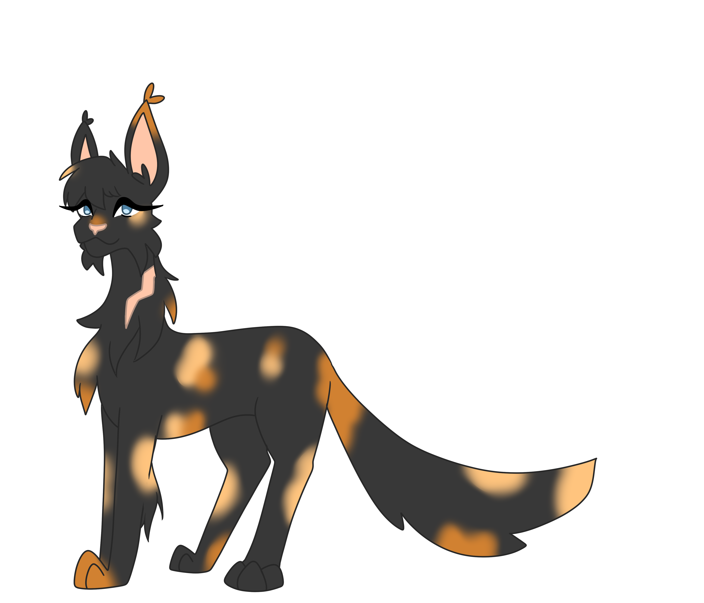

Briarberry

Information
Information

Text
Briarberry was once a normal she cat, a bit naive about the ways of the world, she had a brother and mate she loved with all of her heart. The change occured when Fallowflight her brother Silentflames mate went missing, determined to find a way to rescue her she pleaded to anyone to help her return. Unfortunately for her the dark forest heard this call and made a deal with her, they'd help Fallowflight get home all she had to do was hypnotize her clanmates. But like all deals with the devil this one had dire consequences, quickly the other dark forest cats all perished, she was alone. At their mercy. She was found by Spiderpaw, Alone and vulnerable she listened to what he said, and the dark forest enjoyed his ideas on whom to murder, every night for days she was forced to murder her clanmates, her body merely a puppet to dark forest cats. Eventually a few clanmates remained, she wanted to live for her mate Tinystorm,. She HAD to live for her mate Tinystorm, and thus she turned on Spiderpaw quickly convincing the clan to take her side and murder him but not before he tore up her neck with his claws.
Briarberry was featured in Round 4 (OLD), where she was a Hypnotist. The rest of the mafia died immediately, leaving her solo. However, she managed to pull off the win with the help of that god damn simp of a cat.